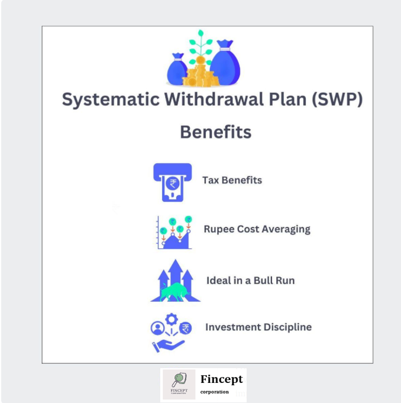

Systematic Withdrawal Plan
Every individual has different financial need. Hence, every investor has a unique investment plan. While some investors prefer investing in a lump sum, some others like to stagger their investments and use a systematic investment plan (SIP). While some investors seek capital growth, some others want regular income from their investments. There are many tools facilities extended by fund houses to meet the expectations of different types of investors. One such facility is a Systematic Withdrawal Plan (SWP). In this article, we will talk about some important things that you need to know about an SWP.
But first, some basics:
What is an SWP?
A Systematic Withdrawal Plan or SWP is a facility extended to investors allowing them to withdraw a fixed amount from a mutual fund scheme regularly. You can choose the amount and frequency of withdrawal. You can also choose to just withdraw the gains on your investment keeping your invested capital intact. At the set date, units from your portfolio are sold and the funds are transferred to your account.
Here are some important features of an SWP:
- It is a facility to redeem units regularly
- You can choose the frequency of withdrawals
- You can either withdraw a fixed amount or only the capital appreciation
- It is ideal for investors seeking regular income from their investments
Benefits of a Systematic Withdrawal Plan (SWP)
Here are some benefits offered by a systematic withdrawal plan:
Tax Benefits
As an investor, if you desire regular income from your investments, then you can either opt for the Dividend option of a scheme or an SWP. When the fund house distributes dividends, it deducts a Dividend Distribution Tax (DDT) at the source. The rate of DDT is 10 percent. Once you receive the dividend, you are not expected to pay any tax on it. On the other hand, if you opt for an SWP, then there is no tax deducted at source. However, capital gains tax will be applicable as per the type of the scheme and the amount of withdrawal. Here is a quick look at the capital gains tax for different types of mutual funds:
| Type | Short-term capital gains tax | Long-term capital gains tax |
|---|---|---|
| Equity mutual funds | 15% | 10% without Indexation |
| Balanced mutual funds | 15% | 10% without indexation |
| Debt mutual funds | As per tax slab | 20% after Indexation |
Rupee Cost Averaging
Whether you purchase or redeem units in installments, you benefit from Rupee Cost Averaging. Since the markets are volatile, when you are redeeming all your units together, the timing of the sale needs to be when the markets are doing well. This ensures that you book good profits. If you end up selling during a slump, your profits can be impacted.
When you opt for an SWP, a certain number of units held by you are redeemed regularly. Therefore, there will be times when the markets are high on the date of redemption and when they are low. If the markets are doing well and you have opted for an SWP of a fixed amount, then lesser units will be redeemed as compared to the time when the markets are low. This averages your returns and protects you from potential losses which can arise if you sell your units during a bear-run. Here is an example to understand:
Rajeev invested Rs.5 lakh in a mutual fund scheme in April 2019. The NAV of the scheme was Rs.500 and he gets 1000 units. At the end of 5 months, he withdrew Rs.2.5 lakh from his investment. On the other hand, Rajesh invested the same amount in the same scheme and at the same NAV. However, he opted for an SWP of Rs.50000 every month, for 5 months. Here is what happens:
For the sake of the example, let’s say that the NAV of the scheme over the 5 months was as follows:
| Month | NAV |
|---|---|
| April | 500 |
| May | 515 |
| June | 510 |
| July | 525 |
| August | 530 |
| September | 498 |
In September, when Rajeev withdraws Rs.2.5 lakh from his investment, 502 units are redeemed (250000/498). Hence, he now has 498 units left and the value of his holdings is Rs.248004.
Now, let’s look at what happens to Rajesh’s holdings. Since he has opted for an SWP of Rs.50000 for 5 months, here is what he gets:
| Month | NAV | SWP Amount (Rs.) | No. of units redeemed | Units left | Remaining fund value (Rs.) |
|---|---|---|---|---|---|
| April | 500 | - | - | 1000 | 500000 |
| May | 515 | 50000 | 97 | 903 | 465045 |
| June | 510 | 50000 | 98 | 805 | 410550 |
| July | 525 | 50000 | 95 | 710 | 372750 |
| August | 530 | 50000 | 94 | 616 | 326480 |
| September | 498 | 50000 | 100516 | 256968 |
Hence, you can see that Rajesh gains by opting for an SWP due to Rupee Cost Averaging.
Ideal in a Bull Run
While most investments offer great returns in a bull run of the market, if you have opted for an SWP and your annual withdrawal amount is lesser than the returns generated by the scheme, then your investment will last you much longer than in a bear market. Also, by withdrawing the gains offered by the bullish phase, you can pocket the gains.
Investment Discipline
Like a SIP helps you learn the disciplined approach to investing, an SWP helps you steer clear of withdrawing large amounts due to panic if the markets correct themselves.
Effective uses of an SWP
Here are some effective ways of using an SWP:
This also helps in making the most out of the investments by investing in the best and high-performing funds at regular intervals.
- Creating a regular source of secondary income – In today’s times, an additional source of income is needed to tide over the rising cost of living. Investing in Mutual Funds and withdrawing via an SWP is a great way to create a regular source of secondary income.
- Create your own pension – Regardless of whether you have a pension plan or not, you can create a corpus around 5 years before retirement and invest it in a mutual fund scheme according to your risk tolerance. Once you retire, you can start an SWP and create your own pension.
- Protect your capital – If you are high averse to taking any risks with your investment, then you can initially invest in Arbitrage Mutual Fund Schemes. These schemes offer assured returns with near-zero risk. You can opt for the dividend option and invest the dividend in a debt scheme using a SIP. Eventually, you can start an SWP and earn regular income without risking your capital.
Summing Up
As you can see, a Systematic Withdrawal Plan is a good tool to have in your toolbox. Whether you are a newbie or an experienced investor, an SWP can be used effectively to achieve your financial goals. Keep this tool in mind while creating your financial plan.
Disclaimer: The views expressed here are of the author and do not reflect those of Groww. Mutual funds are subject to market risks, please read the scheme documents carefully before investing.